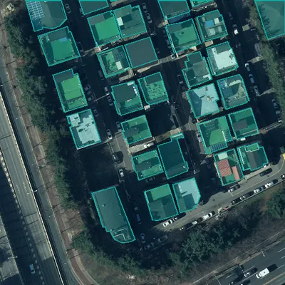
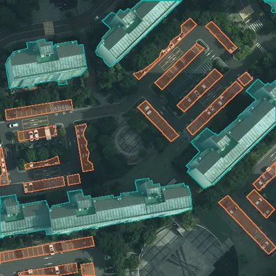
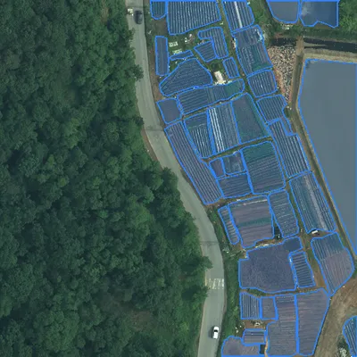
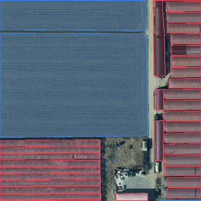
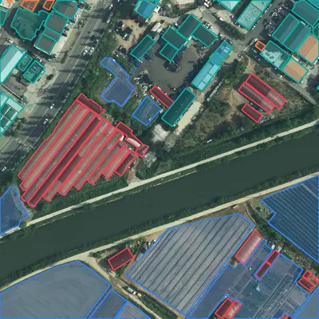
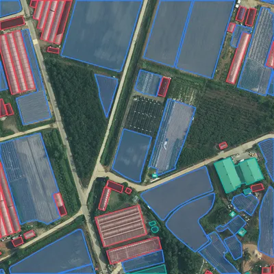

프로젝트에 더하기새 판 만들기
표본 사진
라벨을 겹쳐 그림 · 누르면 크게153,295장 모두 보기





클래스별
라벨 파일에서 센 값| 클래스 | 객체 | 그 클래스가 든 그림 |
|---|---|---|
| 건물 | 1,059,267 | 105,528 |
| 경작지 | 739,204 | 118,318 |
| 주차장 | 147,469 | 41,557 |
| 비닐하우스 | 110,091 | 27,605 |
학습105,036
검증22,506
시험25,753
비닐하우스가 가장 적습니다 — 비닐하우스 모델을 따로 다시 학습할 때 이 묶음만으로는 모자라 경기 · 제주 토지피복 정답을 더하는 것을 권합니다.
어디에 쓰였나
서비스 카드영농관리2.0 판 · 남원시 2023 결과
모델항공 4분류 원판이 자료 전체로 학습 · 4바퀴
뽑은 표본비닐하우스 200 · 건축물 139 · 주차장 170장서비스 만들기 표본 — 비닐하우스 · 건축물 · 주차장 카드의 모델
바탕AI Hub 토지피복 정답(4권역)이 자료는 그것을 4분류로 가공한 것
출처 · 이용 조건
확인 필요LX 안에서 학습 · 분석됨
국내 기관 서비스 모델확인 필요
해외 기관 서비스 모델확인 필요
원본 그림 내보내기안 됨
AI Hub 약관 원문을 아직 열어 보지 못했습니다. 정해질 때까지 이 자료로 만든 모델은 해외 기관에 배포하지 않습니다.
약관 확인하고 정하기LX 관리자만
판 이력
라벨을 고치면 새 판 · 앞 판은 그대로1판대장에서 들임153,295장 · 2,056,031개 · 모델이 써서 잠김잠김
2판다음 판에 담을 것모이면 프로젝트장이 담아 새 판을 만듭니다아직 없음
AI 결과에서 고친 도형0
기관이 알린 오탐0